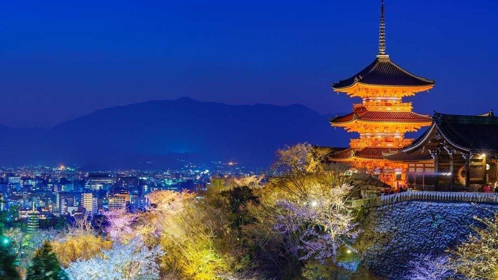

KYOTO
Bien que des preuves archéologiques permettent d'affirmer que les premiers hommes, présents sur les îles du Japon, il y a plus de 50 000 ans comme chasseurs-cueilleurs, furent ensuite parmi les premiers potiers du monde dès le XVe millénaire av. J.-C.[4], la région de Kyoto ne fut peuplée qu'à partir du VIIe siècle par le clan Hata venu de Corée. Au cours du VIIIe siècle, voulant s'éloigner de l'influence du clergé bouddhisteau sein du gouvernement impérial, l'empereurprit la décision de déplacer la capitale depuis l'actuelle Nara vers une région éloignée de cette influence.
La nouvelle ville, Heiankyō (litt. « la capitale de la Paix ») devint le siège de la cour impérialeen 794[5]. Plus tard, la ville fut rebaptisée Kyoto (« la ville capitale »)[6]. Elle développa deux quartiers spécifiques : le quartier sud où se situait le palais impérial et la cour ; le quartier où le shogun Yoshimitsu Ashikagaplaça en 1378 sa résidence dans le 'Hana no Gosho' (ou Muromachi-dono, Karasumaru-dono) du quartier de Muromachi. Cela donnera par ailleurs le nom de la Période Muromachi de l'histoire de l'archipel. Le shogun se fit également construire le Pavillon d'Or Kinkaku-ji dans le nord de la ville. Par la suite, la ville fut véritablement dévastée par les armées lors de la guerre d'Onin, abandonnée en grande partie par ses habitants et livrée au pillage de 1467 à 1477. En 1489, le shogun Yoshimasa Ashikaga se fit construire l'une des merveilles architecturales du Japon : le Pavillon d'Argent (Ginkaku-ji) qui voulait rivaliser avec le Pavillon d'Or construit par son grand-père Ashikaga Yoshimitsu[7].
L'avènement du shogunat Tokugawa en 1600fit perdre à Kyoto son rôle de centre politique et administratif au profit d'Edo, lieu de résidence des shoguns. Toutefois, Kyoto resta la capitale impériale du Japon jusqu'au transfert de la résidence de l'empereur à Edo en 1868, lors de la restauration de Meiji[8]. Après qu'Edo fut rebaptisée Tokyo (signifiant « la capitale de l'Est »), Kyoto fut connue peu de temps sous le nom de Saikyō (« la capitale de l'Ouest »).
Épargnée par les bombardements de la Seconde Guerre mondiale, Kyoto échappa de peu à la destruction atomique, car la ville figurait en tête des cibles désignées par le comité des objectifs américain. La ville fut finalement rejetée à la suite de l'intervention du secrétaire de la Guerre des États-UnisHenry Lewis Stimson et de conseillers, dont le Français Serge Elisseeff, qui connaissaient la richesse culturelle de la ville, et estimèrent que sa destruction serait un obstacle grave à une réconciliation ultérieure avec le Japon.
Les monuments historiques de l'ancienne Kyoto (villes de Kyoto, Uji et Ōtsu) ont été inscrits au patrimoine mondial de l'Unesco en 1994. En 1997, Kyoto accueillit la conférence qui donna naissance au Protocole de Kyoto.